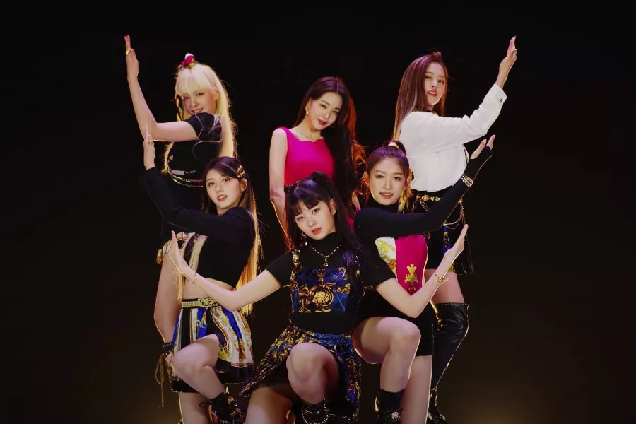
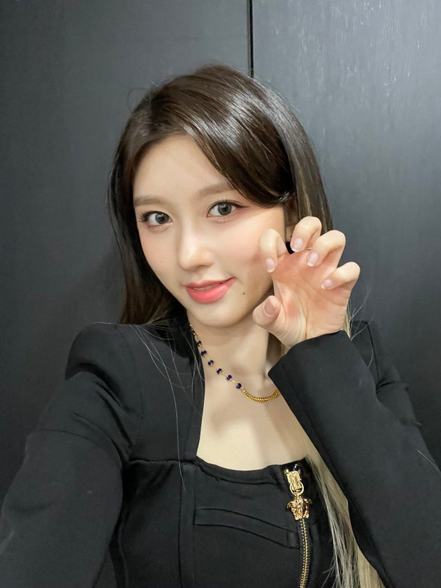
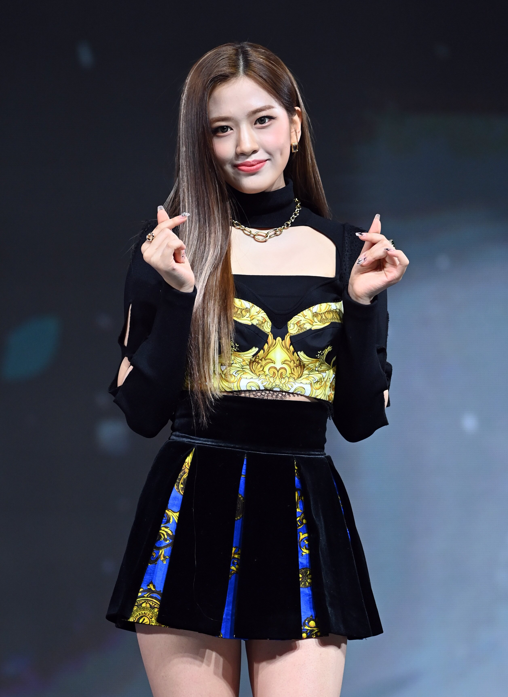
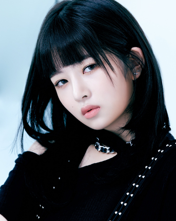
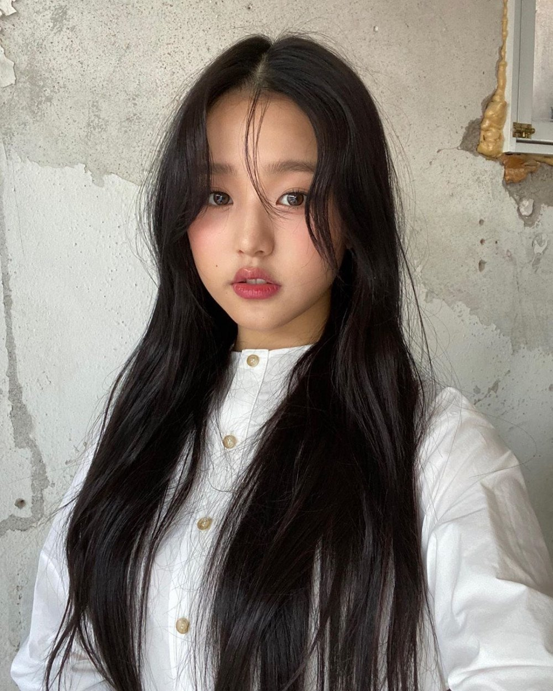
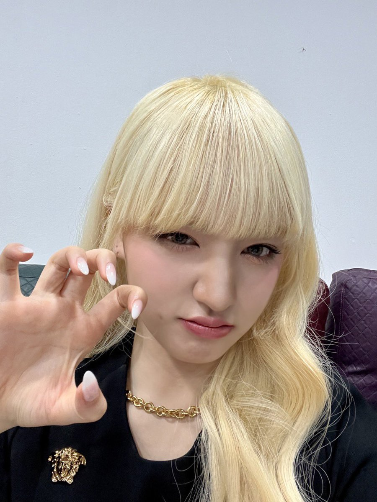
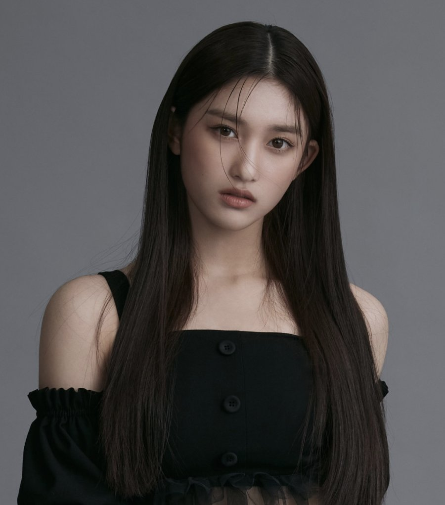

Ive is a girl group with 6 members. They debuted recently with the single album 'Eleven'. Ive debuted on the 1st of December, 2021. The girl group consists of Gaeul, Yujin, Rei, Wonyoung, Liz and Leeseo and they are under 'Starship Entertainment'. Their fandom name is 'Dive'.

MEMBERS
GAEUL

stage name: Gaeul
birth name: Kim Ga Eul
birthday: September 24th, 2002
zodiac sign: Libra
height: 166 cm
nationality: Korean
YUJIN

stage name: Yujin
birth name: An Yu Jin
birthday: September 1st, 2003
zodiac sign: Virgo
height: 172 cm
nationality: Korean
REI

stage name: Rei
birth name: Naoi Rei
korean name: Kim Rei
birthday: February 3rd, 2004
zodiac sign: Aquarius
height: 169 cm
nationality: Japanese
WONYOUNG

stage name: Wonyoung
birth name: Yang Won Young
birthday: August 31st, 2004
zodiac sign: Virgo
height: 173 cm
nationality: Korean
LIZ

stage name: Liz
birth name: Kim Ji Won
birthday: November 21st, 2004
zodiac sign: Scorpio
height: 170 cm
nationality: Korean
LEESEO

stage name: Leeseo
birth name: Lee Hyun Seo
birthday: February 21st, 2007
zodiac sign: Pisces
height: 168 cm
nationality: Korean